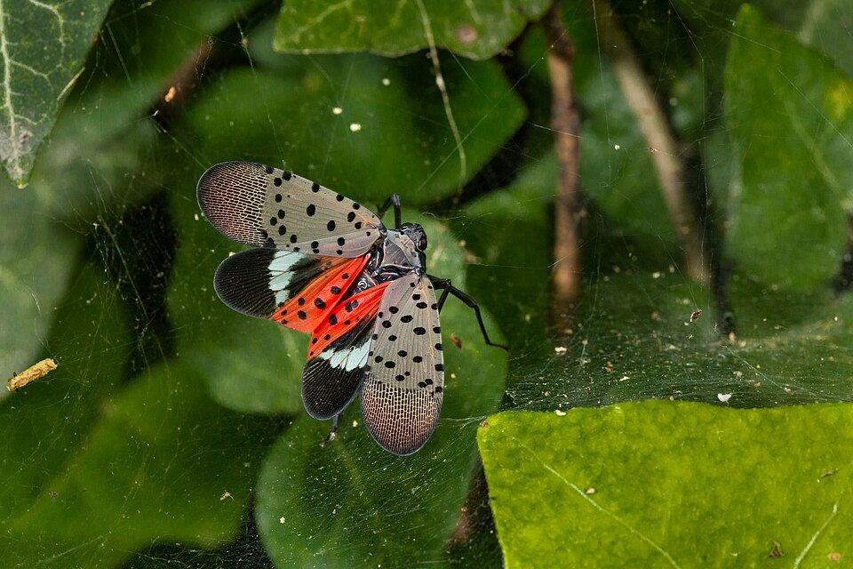

Wikipedia: Spotted lanternfly (opens in a new tab)
Biology, life cycle, native range, and spread history.
See a spotted lanternfly? Answer quick questions + share location (optional) to help scientists stop them.

Official government, agricultural, and reference guides on how to identify, report, and stop the spread of Lycorma delicatula.
Biology, life cycle, native range, and spread history.
U.S. Department of Agriculture alerts, quarantine maps, and checklists.
National Invasive Species Information Center profile and state reporting links.
Field identification photos, management tips, and life-stage calendars.
Found a bug or have ideas to make this reporting tool faster and easier? Fill out our short Google Form.
📝 Open feedback form (opens in a new tab)Spotted lanternflies destroy grapes, maples, fruit trees. Entomologists need where + what stage + how many to track spread and remove them. This app makes reporting take < 30 seconds.
Questions marked are required.